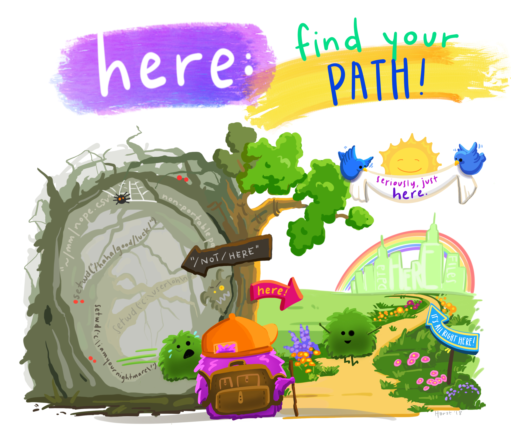

Group Tasks

Context
One of the first stages in preparing a patient for surgery is to administer a premedication. This is a mild sedative which is intended to relax the patient both psychologically and physically before he or she is given an appropriate anaesthetic and subsequently undergoes surgery. In an investigation of the effectiveness of three different premedications, a number of patients had their pulse rates recorded before and after one of the three premedications was administered. The effectiveness of a premedication on a particular patient can be quantified by the drop in recorded pulse rate.
Research Questions
The research questions are as follows:
- Is there any evidence of a difference in the abilities of the three premedications to lower pulse rate?
- If so, which premedications differ and by how much?
Data
The data contains the following variables:
- Age : initial memory score before treatment
- Drug : premedication codes (1-3)
- DrugT: premedication codes (1-3)
- Pulse_before: pulse rate before the premedication was administered
- Pulse_after: pulse rate after the premedication was administered
- Response : the difference between pulse rate before and pulse rate after premedication (before-after)
Loading the Data
You may download the dataset named premedications.csv file from our Moodle course page. Save the file in your local computer and then use the read.csv() function to import the data in your R. You can load the data set into your workspace by running the code below in an Rscript file in your local Rstudio. Make sure that the premedications.csv file is saved in the same folder as the Rscript file.
premed.data <- read.csv('premedications.csv')In addition, you need to load the following packages as well: ggplot2 and tidyverse. To load the packages, you simply need to run the following:
library(ggplot2)
library(tidyverse)Task 1
Create boxplots of the response by each premedication and find the mean and standard deviation of the response in each premedication group.
What are the null and alternative hypotheses?
\(H_0:\mu_{\text{drug 1}}=\mu_{\text{drug 2}}=\mu_{\text{drug 3}}\) and \(H_A:\mu_{\text{drug 1}}\neq\mu_{\text{drug 2}}\text{ and }\mu_{\text{drug 1}}\neq\mu_{\text{drug 3}}\text{ and }\mu_{\text{drug 2}}\neq\mu_{\text{drug 2}}\)
\(H_0:\mu_{\text{drug 1}}=\mu_{\text{drug 2}}=\mu_{\text{drug 3}}\) and \(H_A:\mu_{\text{drug 1}}\neq\mu_{\text{drug 2}}\neq\mu_{\text{drug 3}}\)
\(H_0:\mu_{\text{drug 1}}=\mu_{\text{drug 2}}=\mu_{\text{drug 3}}\) and \(H_A:\mu_{\text{drug 1}}\neq\mu_{\text{drug 2}}\text{ or }\mu_{\text{drug 1}}\neq\mu_{\text{drug 3}}\text{ or }\mu_{\text{drug 2}}\neq\mu_{\text{drug 2}}\)
\(H_0:\mu_{\text{drug 1}}=\mu_{\text{drug 2}}\text{ or }\mu_{\text{drug 1}}=\mu_{\text{drug 3}}\text{ or }\mu_{\text{drug 2}}=\mu_{\text{drug 2}}\) and \(H_A:\mu_{\text{drug 1}}\neq\mu_{\text{drug 2}}\neq\mu_{\text{drug 3}}\)
Task 2
Perform the ANOVA using the aov() function.
What is the value of SST?
Based on the p-value of the F-test, what is your conclusion?
Since the p-value is less than 0.05, we reject Ho and conclude that not all means are equal.
Since the p-value is less than 0.05, we do not reject Ho and conclude that we don't have enough evidence to conclude that not all means are equal.
Since the p-value is less than 0.05, we reject Ho and conclude that none of the means are equal to each other.
Since the p-value is less than 0.05, we do not reject Ho and conclude that we don't have enough evidence to conclude that all means are equal."
Task 3
Perform multiple comparisons using the Bonferroni correction. Use the function pairwise.t.test().
What is the value of \(\alpha^*\) (to 4 decimal places)
Which pairs of means are significantly different?
No pairs
\(\mu_\text{drug 1}\) and \(\mu_\text{drug 2}\)
\(\mu_\text{drug 1}\) and \(\mu_\text{drug 3}\)
\(\mu_\text{drug 2}\) and \(\mu_\text{drug 3}\)